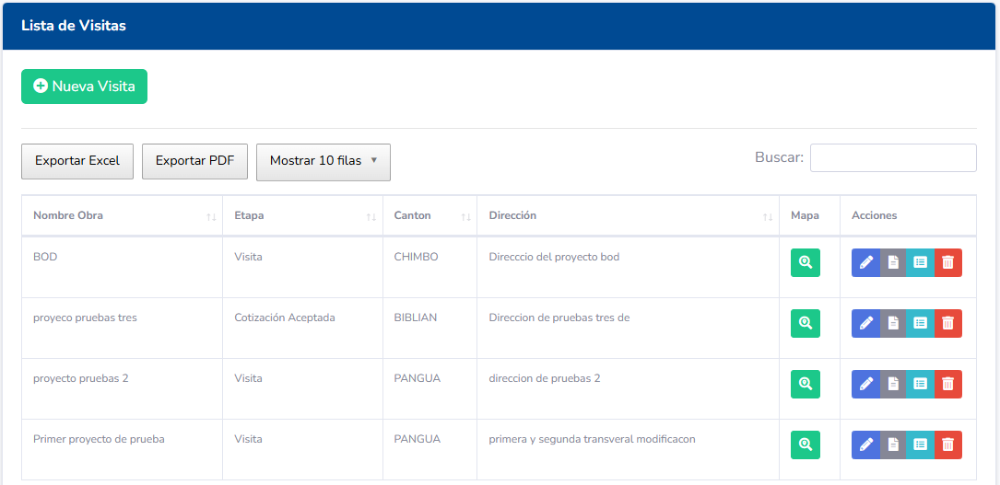
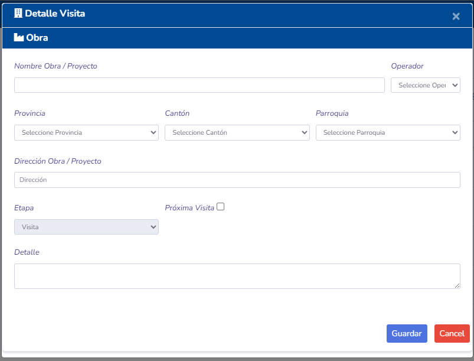
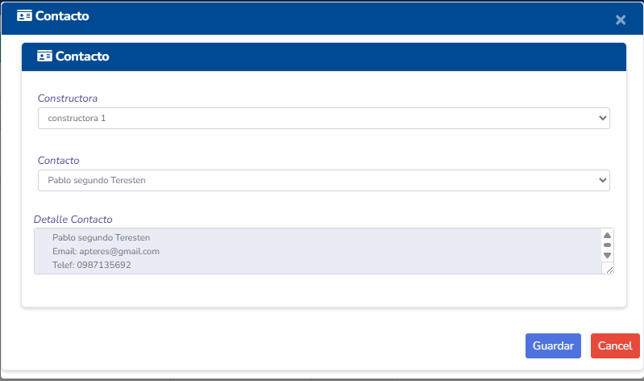
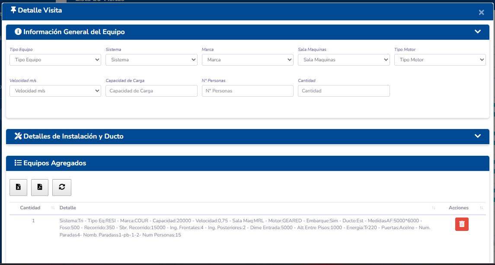
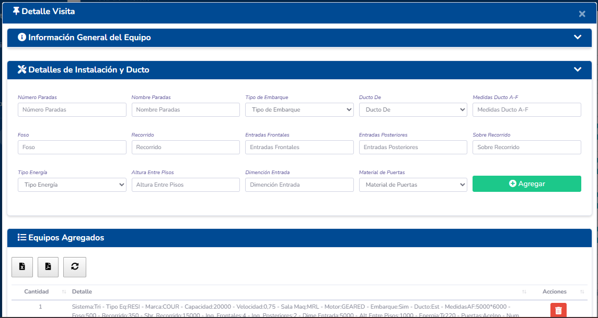
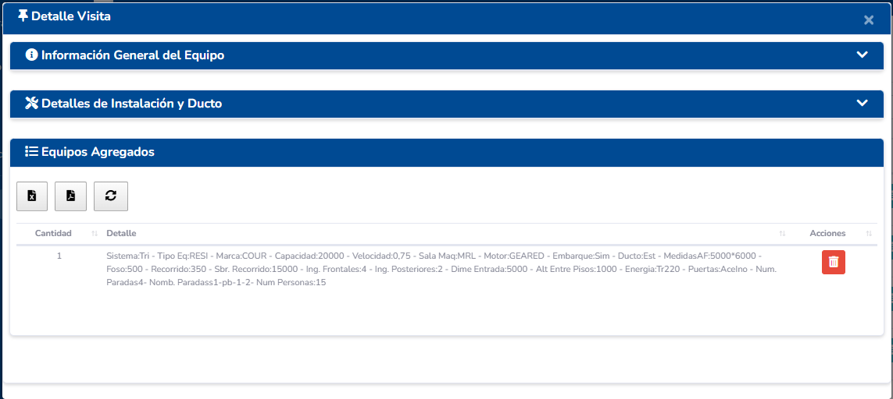
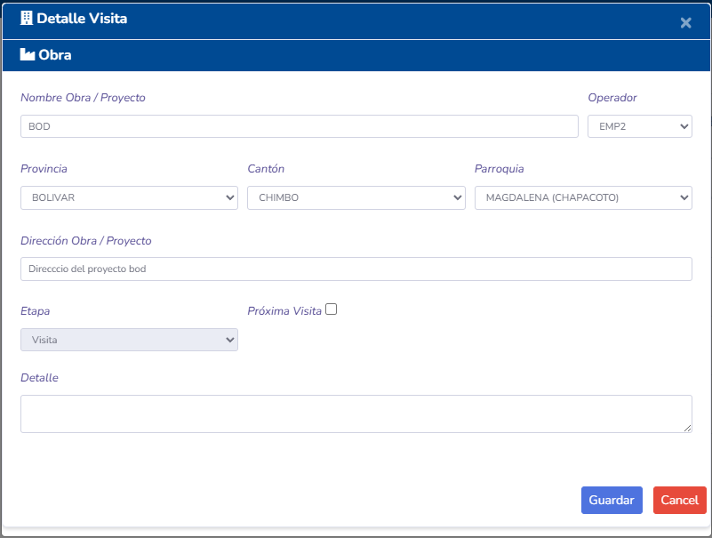

Manual de Usuario - Gestión de Visitas
1. Introducción
El módulo de Gestión de Visitas es una herramienta fundamental en el ciclo comercial de Tecmein. Permite planificar, registrar y dar seguimiento a todas las interacciones y visitas técnicas realizadas a clientes actuales o potenciales.
El objetivo de este módulo es centralizar la información de cada visita, desde su programación inicial hasta la ejecución y los pasos posteriores, asegurando un seguimiento ordenado y eficiente.
2. Acceso al Módulo
Para acceder al módulo de Gestión de Visitas, el usuario debe navegar al menú principal del sistema y hacer clic en la opción Visitas.

3. Pantalla Principal (Listado de Visitas)
Al ingresar al módulo, se presenta un listado con todas las visitas registradas. Esta pantalla ofrece una vista general y permite realizar acciones rápidas.
La tabla de visitas generalmente contiene las siguientes columnas: - ID: Identificador único de la visita. - Cliente: Nombre del cliente asociado a la visita. - Proyecto/Constructora: Proyecto específico al que pertenece la visita. - Fecha Programada: Día y hora en que la visita debe realizarse. - Etapa: Estado actual de la visita (Ej: Planificada, Realizada, Cancelada). - Técnico Asignado: Usuario responsable de llevar a cabo la visita. - Acciones: Botones para interactuar con cada registro (Editar, Eliminar, Ver Detalles, etc.).
Funcionalidades Adicionales:
- Barra de Búsqueda: Permite buscar visitas por cliente, proyecto o técnico.
- Filtros: Permite filtrar las visitas por rango de fechas o por etapa.
- Botón "Nueva Visita": Inicia el proceso para registrar una nueva visita.
4. Acciones Principales
4.1. Crear una Nueva Visita

- Haga clic en el botón "Nueva Visita" ubicado en la parte superior de la pantalla de listado.
- Se abrirá un formulario donde deberá completar la siguiente información:
- Cliente: Seleccione un cliente existente de la lista.
- Constructora/Proyecto: Seleccione el proyecto asociado.
- Fecha y Hora: Especifique el momento de la visita.
- Técnico Asignado: Asigne un usuario del sistema como responsable.
- Contactos: Seleccione las personas de contacto del cliente que atenderán la visita.

- Equipos: (Opcional) Asocie los equipos que serán revisados o instalados.



- Descripción/Observaciones: Añada cualquier detalle relevante sobre el objetivo de la visita.
- Una vez completados los campos, haga clic en "Guardar". La nueva visita aparecerá en el listado.
4.2. Editar una Visita

- Localice la visita que desea modificar en el listado.
- En la columna "Acciones", haga clic en el icono de Editar (usualmente un lápiz).
- Se cargará el mismo formulario de creación, pero con los datos de la visita seleccionada.
- Realice los cambios necesarios y haga clic en "Guardar".
4.3. Eliminar una Visita
- Localice la visita que desea eliminar.
- Haga clic en el icono de Eliminar (usualmente un cesto de basura).
- El sistema le pedirá una confirmación para evitar eliminaciones accidentales.
- Confirme la acción para eliminar permanentemente la visita.
4.4. Avanzar Etapa de la Visita
Cambiar la etapa de una visita es crucial para el seguimiento. 1. Desde el listado, puede haber un menú desplegable en la columna "Etapa" para un cambio rápido. 2. Alternativamente, al Editar o Ver Detalles de una visita, encontrará un botón o sección para "Avanzar Etapa". 3. Seleccione la nueva etapa (por ejemplo, de "Planificada" a "Realizada"). 4. Guarde los cambios. El sistema registrará la fecha y el usuario que realizó el cambio de etapa.
4.5. Ver Detalles de la Visita
Para consultar toda la información de una visita sin riesgo de modificarla: 1. Localice la visita en el listado. 2. Haga clic en el icono de Ver Detalles (usualmente un ojo o una lupa). 3. Se mostrará una vista de solo lectura con toda la información: datos generales, contactos, equipos, seguimientos realizados y el historial de etapas.
5. Conceptos Clave
- Etapas de la Visita: Representan el ciclo de vida de la visita. Un flujo típico podría ser:
- Planificada: La visita ha sido creada y agendada.
- Confirmada: El cliente ha confirmado la fecha y hora.
- Realizada: El técnico ha completado la visita.
- En Seguimiento: Se están realizando acciones post-visita (enviando cotización, etc.).
- Cancelada: La visita no se llevó a cabo.
- Seguimiento: Dentro de los detalles de una visita, se pueden añadir registros de seguimiento para documentar llamadas, correos o próximas acciones relacionadas con esa visita.
6. Permisos y Roles
Las acciones que un usuario puede realizar en este módulo dependen de los permisos asignados a su rol: - Administrador/Jefe de Ventas: Generalmente tiene acceso completo para crear, editar, eliminar y asignar cualquier visita. - Técnico/Comercial: Puede que solo tenga permisos para ver y actualizar las visitas que le han sido asignadas. - Rol de Consulta: Solo puede ver la información de las visitas pero no puede modificarla.
La correcta gestión de permisos asegura que cada usuario interactúe con el módulo de la forma prevista.